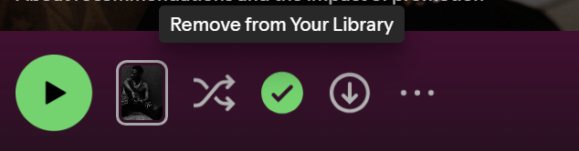

Spotify
URL: https://open.spotify.com
Save Playlist to Your Library (Plus/Check) Button
Located on playlist headers/action bars (next to the main Play button) while viewing a playlist.
TRIGGERS
- Hover On
- Hover Off
- Click On
- Click Off
RULES
Hover On (Unsaved State)
- Cursor changes to a hand icon.
- Text saying "Save to Your Library" appears near the button.
- Plus icon changes from gray to white.
Hover Off (Unsaved State)
- Cursor changes back to a normal arrow.
- Text disappears.
- Plus icon turns back to gray.
Click On (Save to Library)
- Plus icon (+) turns into a green checkmark (✓).
- A small burst of green and white stars pops out around the button.
- Text changes to "Saved to Your Library".
- The playlist is added to the user's library sidebar.
Hover On (Saved State)
- Cursor changes to a hand icon.
- Text saying "Remove from Your Library" appears near the button.
- Green checkmark icon stays green and brightens slightly.
Hover Off (Saved State)
- Cursor changes back to a normal arrow.
- Text disappears.
- Green checkmark icon stays green.
Click Off (Remove from Library)
- Green checkmark icon (✓) turns back into a gray plus icon (+).
- Text changes to "Save to Your Library".
- The playlist is removed from the user's library sidebar.
FEEDBACK
Hover On
- Cursor becomes a hand pointer.
- Small text box appears ("Save to Your Library" or "Remove from Your Library").
- Icon lights up (gray to white or bright green).
Hover Off
- Cursor becomes a normal arrow.
- Text box goes away.
- Icon color goes back to normal.
Click On
- Icon changes from gray plus (+) to green checkmark (✓).
- Checkmark pops and scales up briefly.
- Green and white stars burst around the icon.
- A message pops up at the bottom left: "Added to Your Library".
Click Off
- Icon changes from green checkmark (✓) back to gray plus (+).
- A message pops up at the bottom left: "Removed from Your Library".
LOOPS/MODES
- Binary Toggle Mode: Switches back and forth between Unsaved (Plus icon) and Saved (Green Checkmark icon).
VISUALIZATION


